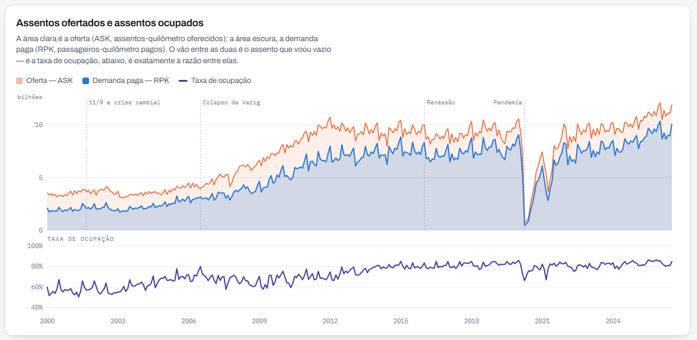
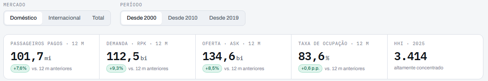
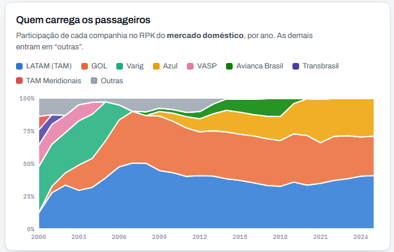
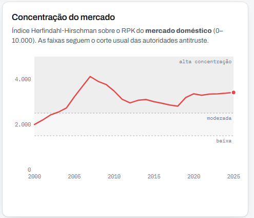
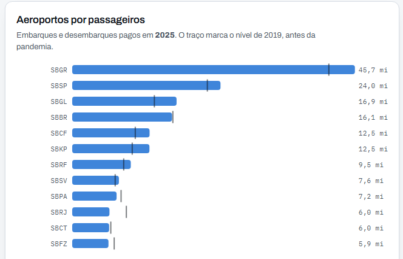
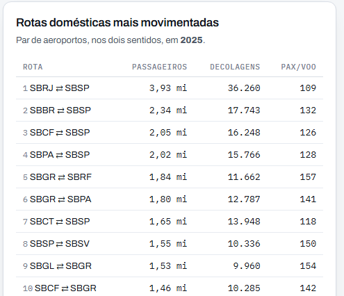

Guia do painel · Economia do transporte aéreo
Como ler o painel, de onde vêm os números e como ele foi construído. Vinte e seis anos de voos regulares no Brasil, a partir dos microdados da Agência Nacional de Aviação Civil.

oitalorabelo.github.io/painel-aviacao-br
Um painel interativo que mostra, em uma tela, quanto de assento a aviação brasileira ofereceu, quanto desse assento foi efetivamente ocupado e como o mercado se reorganizou depois de cada choque do setor — de 2000 até hoje.
Ele responde a três perguntas de economia industrial aplicadas ao transporte aéreo: o mercado cresceu? (demanda e oferta), a indústria ficou mais eficiente? (taxa de ocupação) e quem ficou com o mercado? (participação e concentração). Todos os números saem de uma única base oficial, descrita na seção 09.
O painel é público, abre em qualquer navegador sem cadastro e se atualiza sozinho todo mês. Não é uma imagem: os filtros funcionam, os gráficos respondem ao mouse e a série completa pode ser aberta em tabela.
Antes de ler os gráficos, vale fixar o vocabulário. São quatro medidas, e todas as outras derivam delas.
Contar passageiros ignora a distância e, com isso, o recurso empregado. Duas companhias com o mesmo número de passageiros podem ter operações de porte completamente diferente. O painel mostra os passageiros como indicador de topo — é a medida que o público entende —, mas usa RPK e ASK em toda a análise de mercado.
Tudo no painel responde a dois filtros, no alto da página. Eles valem para a tela inteira: mudar um deles recalcula todos os gráficos abaixo.
Uma observação importante sobre o filtro de mercado: as seções de participação e concentração sempre informam, no próprio texto, a qual mercado se referem. Com o filtro em Total, elas mostram o mercado doméstico — somar a participação de uma companhia nos dois mercados produziria um número sem significado econômico, porque são mercados relevantes distintos, com concorrentes distintos.
Logo abaixo dos filtros vêm cinco números-síntese. Os quatro primeiros são acumulados dos últimos doze meses — não do ano-calendário — e trazem a variação contra os doze meses imediatamente anteriores. Isso neutraliza a sazonalidade: janeiro sempre será mais forte que fevereiro, e comparar doze meses com doze meses elimina esse ruído.

A leitura conjunta dos três primeiros cartões já é uma análise: se o ASK cresce mais rápido que o RPK, a companhia está colocando capacidade acima do que o mercado absorve — e a taxa de ocupação, no quarto cartão, cai. É o primeiro sinal de excesso de oferta, e costuma anteceder guerra de preços.
As setas percentuais comparam janelas de doze meses. A taxa de ocupação é a exceção: por ser ela própria um percentual, sua variação aparece em pontos percentuais (p.p.), e não em porcentagem. Sair de 80% para 84% é uma alta de 4 p.p., não de 4%.
É o gráfico que carrega a tese do painel. Duas áreas no mesmo eixo — porque RPK e ASK são a mesma unidade e só assim são comparáveis — e, logo abaixo, a razão entre elas.
A taxa de ocupação do mercado doméstico saiu de 56,8% em 2000 para 83,7% em 2025. Em termos práticos: em 2000, quatro de cada dez assentos voavam vazios; hoje, menos de dois. Boa parte do crescimento de receita do setor veio daí — não de mais aviões, mas de aviões mais cheios.
| Ano | Passageiros | RPK (bi) | ASK (bi) | Ocupação |
|---|---|---|---|---|
| 2000 | 26,7 mi | 22,9 | 40,2 | 56,8% |
| 2010 | 67,7 mi | 67,3 | 99,0 | 68,0% |
| 2019 | 91,8 mi | 92,6 | 111,8 | 82,8% |
| 2020 | 42,5 mi | 46,2 | 58,6 | 79,0% |
| 2025 | 99,1 mi | 108,4 | 129,6 | 83,7% |
Mercado doméstico, voos regulares. A mesma tabela, com todos os anos, está no fim do painel em Série anual.
As duas seções seguintes do painel respondem à pergunta “quem ficou com o mercado”. Elas devem ser lidas juntas: a primeira mostra quem, a segunda mostra quão concentrado.


Cada faixa é uma companhia, e sua espessura é a participação naquele ano. O total soma sempre 100%, então o gráfico mostra participação relativa: uma faixa que afina pode significar que a empresa encolheu ou que as concorrentes cresceram mais rápido. Para separar os dois casos, volte ao gráfico de oferta e demanda.
A leitura mais eloquente é a das faixas que desaparecem — Transbrasil, VASP, Varig, Avianca Brasil —, cujo espaço é absorvido por quem ficou.
A linha vermelha é a concentração; as faixas de fundo, os cortes do antitruste. Três movimentos merecem atenção:
| Ano | HHI | 4 maiores | Empresas | Leitura |
|---|---|---|---|---|
| 2000 | 1.995 | 75,4% | 19 | moderada |
| 2006 | 3.674 | 96,3% | 22 | alta — colapso da Varig |
| 2015 | 3.004 | 99,1% | 7 | alta |
| 2019 | 3.191 | 99,6% | 7 | alta |
| 2025 | 3.414 | 100,0% | 8 | alta — tripólio |
Troque o filtro para Internacional e olhe o mesmo par de gráficos. O mercado internacional que serve o Brasil tinha, em 2025, 43 companhias e HHI 668 — não concentrado. O doméstico, no mesmo ano: oito companhias e HHI 3.414. Mesmo país, mesmo ano, dois regimes de concorrência opostos — a diferença está nas barreiras à entrada: cabotagem, slots e escala de rede.
As duas últimas seções descem do agregado nacional para a geografia. É aqui que os efeitos macro se materializam em lugares concretos.


Marca onde aquele aeroporto estava em 2019, antes da pandemia: barra que passa do traço já superou o nível pré-pandemia; barra que não chega lá ainda não recuperou. O mouse sobre a barra mostra os dois valores e a variação exata.
O caso mais instrutivo está no Rio de Janeiro, e ele contradiz a leitura fácil de que “o setor se recuperou”:
| Aeroporto | 2019 | 2025 | Variação |
|---|---|---|---|
| Guarulhos SBGR | 41,5 mi | 45,7 mi | +10,2% |
| Galeão SBGL | 13,3 mi | 16,9 mi | +27,0% |
| Campinas SBKP | 9,7 mi | 12,5 mi | +28,7% |
| Brasília SBBR | 16,3 mi | 16,1 mi | −0,8% |
| Santos Dumont SBRJ | 8,8 mi | 6,0 mi | −31,1% |
Santos Dumont perdeu quase um terço do movimento enquanto o Galeão ganhou mais de um quarto. Isso não é recuperação incompleta: é realocação de tráfego dentro da mesma cidade, resultado direto da regulação de slots imposta a Santos Dumont. Um número agregado nacional jamais mostraria esse efeito — e é exatamente por isso que o painel desce ao aeroporto.
Traz os pares de aeroportos mais movimentados, nos dois sentidos. A coluna pax/voo é a mais reveladora: divide passageiros por decolagens e expõe a escolha de equipamento. Valores baixos indicam alta frequência com aeronave menor — rota de executivos, que paga por horário. Valores altos indicam aeronave grande em menor frequência — rota de lazer.
A tabela mostra as dez maiores rotas, não todas. E o HHI do painel é nacional, não por rota — mas, em economia antitruste, o mercado relevante em aviação é a rota, não o país. Uma rota atendida por uma única companhia é um monopólio, mesmo num país com oito companhias. Essa análise exige recalcular o índice para cada par de aeroportos, e está fora do escopo deste painel.
A sequência abaixo transforma o painel de uma coleção de gráficos em um método. Ela vai do agregado ao particular, e cada passo testa o anterior.
Passos 1–3. Mercado doméstico, 2019 a 2025. Os passageiros caem de 91,8 para 42,5 milhões em 2020 — uma perda de 54% em um ano. Mas a taxa de ocupação cai apenas de 82,8% para 79,0%: as companhias cortaram oferta quase na mesma proporção da demanda perdida. O choque foi de volume, não de eficiência.
Passos 4–5. A Avianca Brasil já havia saído em 2019, e nenhuma entrante apareceu na crise. O HHI sobe de 3.191 para 3.414 entre 2019 e 2025: o setor saiu da pandemia mais concentrado do que entrou.
Passo 6. Em 2025 o total nacional já supera 2019 — mas Santos Dumont opera 31% abaixo. A recuperação agregada esconde uma redistribuição geográfica relevante.
Todo número do painel vem de uma única base oficial. Não há estimativa, projeção nem dado de terceiros.
| Base | Dados Estatísticos do Transporte Aéreo — ANAC |
|---|---|
| Arquivo | Dados_Estatisticos.csv — 359 MB, 1.096.556 linhas, 38 colunas |
| Origem | Portal de dados abertos da ANAC → Voos e operações aéreas → Dados Estatísticos do Transporte Aéreo |
| Granularidade | empresa × par de aeroportos × mês |
| Cobertura | janeiro de 2000 a julho de 2026 |
| Catálogo | localizada via AVSTATS-Brasil, do NECTAR-ITA |
O AVSTATS-Brasil não é a fonte: é um catálogo de 18 fontes oficiais de 7 instituições (ANAC, DECEA, SAC, IBGE, ANP, BCB e IPEA), usado para localizar, entre elas, a base adequada à pergunta deste painel. Os números vêm da ANAC, diretamente.
O painel se reconstrói sozinho todo mês. Nenhuma etapa depende de alguém lembrar de rodar algo: um robô do GitHub executa a sequência inteira e publica o resultado.
O problema central é de tamanho. A base da ANAC tem 359 MB — grande demais para um navegador baixar e processar a cada visita. A solução é fazer todo o trabalho pesado antes, uma vez por mês, e publicar apenas o resultado já mastigado. São seis etapas:
Os dados agregados são versionados. Cada execução guarda o painel.json no repositório. Como a ANAC revisa números retroativamente, o histórico do projeto acaba funcionando como um registro dessas revisões — algo que a própria ANAC não oferece.
A agregação é determinística. Rodar o mesmo processo sobre o mesmo arquivo produz um resultado idêntico, byte a byte. Isso foi verificado: o robô gerou na nuvem exatamente o mesmo arquivo gerado localmente. É o que garante que o painel seja reprodutível — qualquer pessoa pode repetir o processo e chegar aos mesmos números.
| Painel | oitalorabelo.github.io/painel-aviacao-br |
|---|---|
| Código e dados | github.com/oitalorabelo/painel-aviacao-br |
| Fonte primária | sistemas.anac.gov.br/dadosabertos |
| Catálogo | avstats-brasil.avmoliveira.chatgpt.site |
| scripts/agrega.py | lê o CSV da ANAC e produz o JSON agregado |
| scripts/build.py | injeta o JSON no modelo e gera a página final |
| src/painel.template.html | a página: HTML, CSS e gráficos em SVG |
| data/painel.json | os dados agregados, versionados a cada execução |
| .github/workflows/ | o agendamento e as etapas de publicação |
Três comandos, em qualquer máquina com Python:
RABELO, I. Demanda, oferta e concentração no transporte aéreo brasileiro: painel de dados, 2000–2026. 2026. Elaborado a partir de ANAC, Dados Estatísticos do Transporte Aéreo. Disponível em: oitalorabelo.github.io/painel-aviacao-br.
Os dados são públicos e de autoria da ANAC. O código do painel está sob licença MIT. Este guia acompanha a versão do painel com série até julho de 2026.